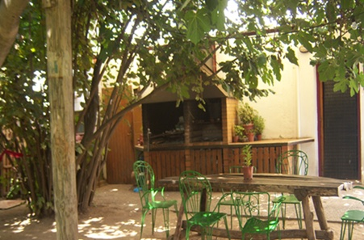

Residenze individuali
«Vengo a sviluppare il mio progetto»
Soggiorni individuali nei 5 appartamenti.
Si possono prenotare direttamente.
Un rifugio nell'Horta de Lleida
per ascoltare, creare ed essere.
Viviamo in un mondo che corre troppo. E a volte tutto ciò di cui abbiamo bisogno è tempo e silenzio.
L'associazione Amics de la Natura apre le porte di Les Vaqueres, un luogo pensato per la concentrazione, la creatività e il benessere, in piena natura.
Cinque appartamenti indipendenti e accoglienti (uno dei quali completamente accessibile) nel paesaggio tranquillo dell'Horta de Lleida, dove la luce della sera e il ritmo della terra segnano il tempo.

Questo è il tuo posto.
Un luogo per riposare.
Un respiro per la mente.
Un luogo dove la natura ti fa compagnia.
Agli artisti si chiede di:
Gli artisti mostrano un saggio del risultato finale.
Non è necessario arrivare con un'opera finita.
L'obiettivo è collegare la residenza all'Horta e alla terra che la circonda.
La vita quotidiana fa parte della residenza. Una casa condivisa permette di avere uno spazio proprio restando in contatto con gli altri.

Ogni artista può concentrarsi sul proprio progetto, ma può anche scegliere di condividere parte del suo processo con gli altri residenti.
Così gli artisti residenti che lo desiderano possono proporre attività, incontri o workshop legati alla loro pratica, oppure aprirli anche ad artisti e persone del territorio.
«Vengo a sviluppare il mio progetto»
Soggiorni individuali nei 5 appartamenti.
Si possono prenotare direttamente.
«Vengo a sviluppare il mio progetto in un gruppo di creatori che condividono un tema, una disciplina o una sfida»
Uno spazio condiviso in cui creare: insieme formano un piccolo ecosistema creativo per una settimana.
5 artisti · discipline diverse · un luogo · un tempo
Per esempio: Settimana di creazione · corpo, spazio e immagine. Potrebbero partecipare:
Ognuno sviluppa il proprio progetto, ma condividono la vita quotidiana e gli spazi comuni. Non c'è un tema fisso: la ricchezza sta proprio nella diversità.
Diverse specialità intorno a un filo comune: 5 residenti, ognuno con una specialità all'interno dello stesso tema.
Esempio: Settimana di teatro · «dall'idea alla scena»
Un residente guida e coordina la settimana.
Per esempio, una regista teatrale potrebbe proporre:
«Voglio passare una settimana a indagare come si costruisce un personaggio»
Potrebbe invitare o suggerire profili diversi:
Esempio: un fine settimana di fotografia.
Esempio: una settimana di scrittura in campagna. Possono venire da 6 a 10 partecipanti, più l'artista o lo scrittore.

I workshop sono proposti e condotti dagli artisti stessi.
Trovi altre foto e altri luoghi nella pagina Bibliografia (si apre in una nuova scheda).
Una camera oscura è un dispositivo ottico che proietta un'immagine capovolta dell'esterno in uno spazio chiuso, mentre lo sviluppo fotografico è il processo chimico che rende visibile quell'immagine e la fissa.
La nostra camera oscura si trova dentro un furgone, attrezzato anche per sviluppare le foto.
L'idea e l'identità del progetto
L'associazione promuove un modello culturale e creativo. È un progetto culturale con soggiorno. Non affittiamo appartamenti. Offriamo un luogo in cui vivere, creare e condividere per un periodo.
Attraverso il progetto «Residenze d'artista», le persone possono partecipare nelle diverse formule e dare un contributo per prendere parte al programma e aiutare a sostenere il luogo.
Sui contributi conta una cosa: essere un'associazione senza scopo di lucro non significa non dover essere economicamente sostenibile. Al contrario. Bisogna coprire manutenzione, riparazioni, pulizie, assicurazioni, utenze, gestione, comunicazione, rinnovo delle attrezzature, ecc.
Eventuali avanzi non si dividono tra proprietari: vengono reinvestiti nel progetto.